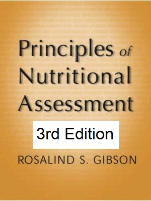

Grande F1
Rittenschober D1
3rd Edition June, 2025
https://nutritionalassessment.org/chap04/
Email: Rosalind.Gibson@Otago.AC.NZ
Licensed under CC-BY-4.0
( PDF )
Grande F1
Rittenschober D1
Padula de Quadros V1
Holmes B1
Principles of
Nutritional Assessment:
Food Composition
3rd Edition June, 2025
Abstract
Food composition data are the basis for almost everything in nutrition. Food composition tables or databases (FCTs) provide detailed information on the content of macronutrients (i.e. protein, fat, carbohydrates and dietary fiber), vitamins, minerals, and other components in foods and beverages. FCTs are needed to convert quantitative or semi-quantitative dietary data into energy and nutrient intakes. FCTs should be developed at country, or at least regional level, due to intrinsic (e.g., variety/breed or cultivar) and extrinsic factors (e.g., soil composition, farming conditions and fortification levels) that may affect the composition of foods. Published FCTs vary considerably in terms of data quality, documentation, food and nutrient coverage, analytical methods and accessibility. The ability to find available, accessible and good quality food composition data is key to ensure appropriate use for decision-making and policies for nutrition. Using inappropriate or poor quality FCTs to estimate nutrient intake may lead to inaccurate results when assessing nutrient adequacy. In this context, an evaluation of the quality of published FCTs is crucial for users to determine suitability according to the specific need. The first part of this chapter discusses the methodologies, uncertainties, and challenges in compiling food composition data. In principle, analytical data produced by trained analysts using appropriate methods carried out under quality assurance procedures are key to generate high-quality FCTs. However, food analysis is costly and time consuming, and compromises between making use of existing data and augmenting a database with new chemical analyses often need to be made. In particular, for recipes, calculation procedures represent a cost-effective alternative to producing estimates of the nutrient content for composite dishes based on ingredients. Food composition data may also be compiled from analytical values from the literature or borrowed from other published FCTs. When selecting food composition values for use from other sources it is critical to recognize potential sources of error and understand the quality of the data, as these factors may impact the use of the data, for example for nutrient intake calculations. The second part of the chapter focuses on using food composition data to assess nutrient intakes. Food matching (i.e. all steps performed to link foods from different datasets to food composition data) is a critical step to obtain high quality estimations of nutrient intake. When performing food matching, the highest quality match should be selected by identifying the closest food available, with a complete nutrient profile, in the most appropriate FCT. Finally, this chapter provides key resources that can be accessed and used to support readers in compiling and using food composition data. CITE AS: Grande F. Rittenschober D, Padula de Quadros V, Holmes B, Principles of Nutritional Assessment: Food Composition.https://nutritionalassessment.org/chap04/
Email: Rosalind.Gibson@Otago.AC.NZ
Licensed under CC-BY-4.0
( PDF )
4a.0 Introduction.
Food composition tables or databases (FCTs) are needed to convert quantitative or semiquantitative dietary data into energy and nutrient intakes. FCTs provide detailed information on the content of macronutrients (i.e. protein, fat, carbohydrates and dietary fiber), vitamins, minerals, and other components in foods and beverages. Nutrient values are usually expressed per 100g edible portion on fresh weight basis (per 100g EP) for all foods (including liquids), although sometimes additional information for common household measures or portion sizes is provided. When selecting food composition values for use it is critical to recognize potential sources of error and understand the quality of the data, as these factors may affect nutrient intake calculations. Uncertainties may arise from random variability in nutrient content or from systematic errors, which can lead to under‑ or overestimation of nutrient intakes. FCT values reflect total nutrient content, not bioavailable amounts, as bioavailability data for most nutrients remain unquantified. Thus, calculated nutrient intakes represent the maximum potential availability. More information on bioavailability is available on Chapter 4b Assessment of bioavailable nutrient intakes. This chapter discusses the methodologies, uncertainties, and challenges in compiling and using food composition data to assess nutrient intakes.4a.1 Compiling or augmenting food composition data
Detailed guidelines and tools for compiling food composition data have been published by the Food and Agriculture Organization of the United Nations (FAO), the International Network of Food Data Systems (INFOODS), the European Food Information Resource (EuroFIR) and others, including (Charrondiere et al. 2016; Durazzo et al., 2022; Greenfield & Southgate, 2003; Møller, 2025; Presser et al. 2018; Rand et al. 1991; Westenbrink et al. 2009). Hulshof et al. (2019) also outline a detailed roadmap for establishing, updating and assessing the quality of nutrients for FCTs in Southeast Asia, while Murphy et al. (1991) provide a detailed description of the development of a research food composition database for use in rural Kenya. Four methods are used to compile food composition data; these are discussed briefly below. The same methods can also be used to augment or update existing FCTs with values for local food items.4a.1.1 Direct chemical analysis
Analytical data produced by trained analysts using appropriate methods carried out under quality assurance procedures are key to generate high-quality FCTs (Greenfield & Southgate, 2003). However, food analysis is costly and time consuming, so a balance must be drawn between making use of existing data and augmenting a database with new chemical analyses. Priority should be given to analyzing those foods that meet the following criteria:- The food makes up a significant component of the local diet;
- The food contributes significantly to the intake of the dietary component of interest;
- The data for the component of interest in the food, or the food as eaten, is inadequate or nonexistent.
4a.1.2 Using food composition data from other sources
Food composition data may also be compiled from analytical values from (un)published literature or borrowed from other published FCTs. Analytical values are often drawn from several sources including the food industry, published and unpublished research or laboratory reports, contract research, and government research laboratories. However, it is important to consider that analytical values from different sources may vary in quality. To assess the reliability of existing analytical data, rating systems have been developed using various quality criteria including:- food description,
- component identification,
- number of samples on which values are based,
- analytical method used,
- sample handling,
- sampling protocol, and
- analytical quality control.
4a.1.3 Estimating missing food composition values
Ideally, FCTs should contain values for each nutrient for every type of food. However, values are often missing for some nutrients. It is not always clear whether these missing values arise because no analytical data are available or because the nutrient content for a particular food is very small. Database compilers should clearly distinguish between these, and values that are truly zero (see more details in Section 4a.3). The term "missing" should be assigned only when analytical data are not available and yet there is a high level of confidence that some amount of the component is present in the given food. The term "trace" should be applied when the component is present at levels below the measurement accuracy of the analytical method. Greenfield & Southgate (2003) suggested some limits to declare different components as "trace", but it is important to note that these depend on the analytical method used. "Zero" should be used when the component is not present in any detectable amount. In some cases, a zero value is assigned based on a known biological relationship. For example, vitamin B12 does not occur in most plant products (Watanabe et al., 2014) and retinol, the preformed vitamin A compound, is exclusively found in animal foods (Booth et al., 1992). Before using any FCT for calculating nutrient intakes, all missing and trace values in the database must be replaced with calculated or imputed numerical values for the components of interest. Several procedures and sources can be used for imputing values (Box 4a.1). The process is important because missing values may be treated as zero when nutrient intakes are calculated, leading to an underestimation. Further details are given in Murphy et al. (1991), Rand et al. (1991), and Schakel et al. (1997)
Box 4a.1: Techniques for imputing values for missing
nutrients.
When selecting a similar food for estimating nutrient
values, several factors must be considered, and the choice
depends on the nutrient of interest. These factors may
include color, plant maturity, processing or preparation,
growing conditions, enrichment, fortification or use of
other additives, or cut of meat. As an example, the color
of the vegetable is particularly important when imputing
the carotenoid or pro-vitamin A content of a vegetable
(FAO, 2012;
Schakel et al., 1997).
More details can be found in
(Section 4a.5).
Examples of how to calculate these imputed estimates can
be found in Rand et al.
(1991),
Schakel et al.
(1997),
and Gibson and Ferguson
(1999);
some food group-specific
details are provided by Møller
(2025).
All imputed food
composition values should be documented in the food
composition database, together with their source,
including the citation and the calculation procedure.
While the above-mentioned approaches for estimating
missing values are still commonly used, statistical
prediction models and autoencoder algorithms can be
considered as alternatives compared to more traditional
techniques
(Gjorshoska et al., 2022;
Ispirova et al., 2020).
- Values for cooked foods from raw foods. Requires adjustments considering data on the cooked yield, water and fat loss or gain and nutrient losses during cooking (i.e. nutrient retention factors).
- Values for dried foods from fresh foods. Requires data on moisture loss and nutrient losses during drying.
- Calculation from recipes. Requires the weight of individual ingredients in the recipe, the final weight of the prepared recipe and the nutrient values for the individual ingredients (Section 4a.1.4).
- Values for local foods from published literature. May need actual moisture content of local foods because of differences in local preparation, processing or storage conditions, etc.
- Values from similar food items. Requires the identification of analytical data on similar foods selecting the closest food to match. It is important to consider the component of interest and other relevant aspects such as part of the food consumed, color, maturity, fortification, etc.
- Generic values from specific values. Derived from aggregating data of specific foods (e.g., all locally consumed fruits listed in a dataset) to obtain a weighted/unweighted mean value for a generic food item ("local fruits").
- Assumed zero. Requires the knowledge that a component is not present in the food item in any detectable amount, based on an examination of data for similar foods.
- Converting nutrient values from nutrient label information of a commercial food product. Requires converting the nutrient values provided by the package label from serving size to a 100g basis, although a precise value may not be possible due to rounding procedures. Only used if original analytical data cannot be obtained from either an analytical laboratory or the manufacturer.
4a.1.4 Calculating nutrient values of recipes
Direct analysis is the preferred method to determine the nutrient content of foods. However, recipe calculation procedures represent a cost-effective alternative to produce estimates of the nutrient content for composite dishes based on ingredients. Differences between calculated and analyzed values for recipes exist, especially for micronutrients, due to several reasons such as differences in the nutrient content of ingredients in FCTs and ingredients actually used in recipe preparation, as well as duration of cooking and temperature used during the recipe preparation (Chen et al., 2009; Vasilopoulou et al., 2003). On the other hand, the impact of these discrepancies can be questioned when compared to the intra and interindividual variations in the types and amounts of ingredients or even on the cooking methods used to prepare recipes, which also result in a great source of variability (Ene-Obong et al., 2019; Santangelo et al., 2022). Recipes can range from simple combinations of ingredients to more complex preparations involving cooking, which require adjustments using yield and nutrient retention factors. Examples of simple combinations include a raw fruit salad, and the preparation of tomato soup from condensed soup and whole milk. In these cases, nutrient values for the ingredients as consumed are summed and then corrected for 100g of the final food (Rand et al., 1991). In contrast, calculating the nutrient content of a cooked multi-ingredient recipe requires accounting for changes in both weight and nutrient content. In these cases, appropriate calculations require complete recipe information, including the weight of each ingredient and the final weight of the cooked recipe. Yield factors must be applied to adjust for changes in water and/or fat during cooking, while nutrient retention factors should be applied to estimate nutrient losses. Given these considerations, it is important to highlight that simply summing the nutrient values of raw ingredients is not appropriate for cooked multi-ingredient recipes. Several recipe calculation methods exist, but the mixed method, whereby nutrient retention factors are applied at the ingredient level and the weight yield factor is applied at recipe level, is recommended to calculate the composition of multi-ingredient recipes (FAO, 2013; Reinivuo & Laitinen, 2007). In practice, different recipe calculation methods can be considered for other purposes. For example, the ingredient method can be used when there is the need to estimate the nutrient contribution of individual ingredients from multi- ingredient recipes (Crispim et al., 2024). Several stages are used to calculate the nutrient content of recipes using the mixed method. These are- selection of the recipe and naming,
- collection of complete recipe information, including list of ingredients and respective weight in grams of the edible portion,
- collection of data for the complete nutrient profile of each ingredient,
- selection of calculation method and nutrient retention factors,
- adjustment of the nutrient content of each ingredient for the effects of preparation (appropriate nutrient retention factors),
- summation of ingredient composition,
- final water/fat adjustments, and
- adjustments to express the recipe composition per 100g of final recipe.
4a.2 Sources of error in food composition values
The quality of food composition values in FCTs is often variable and subject to random and/or systematic errors. Such errors impact the calculation of nutrient intakes and generate additional uncertainty. Numerous standards, guidelines and tools have been developed by expert authorities such as FAO, INFOODS and EuroFIR ASIBL in an effort to minimize the sources of error and facilitate international data exchange (Charrondiere et al., 2013; Charrondiere et al., 2016; Durazzo et al., 2022; Finglas et al., 2014; Trusswell et al., 1991). These standards and guidelines have been adopted by several compilers of FCTs. The sources of error are considered in detail below and summarized in Box 4a.2. For some standard components the most critical point is the choice of the analytical method, while for other components levels are affected by inconsistent definitions or expressions, or because they are calculated in a non-systematic way. For some components all sources of error may apply. The factors outlined in the sections below make the evaluation, selection and comparison of data from different data sources very challenging.
Box 4a.2: Examples of sources of error in food composition
tables or databases (FCTs).
- Inadequate sampling protocols resulting in data for unrepresentative food samples being included, or incorrect preservation or preparation of food samples.
- Inappropriate or errors in the analytical methods used for the analysis.
- Conversion factors for calculated components (e.g. energy and protein content of foods) are not standardized.
- Incorrect/inconsistent terminology used to express certain nutrients.
- Incorrect/inconsistent documentation of trace, zero and missing values.
- Incorrect/incomplete description of individual food items and/or source of nutrient values.
- Genetic, environmental, food preparation, or processing factors result in variability.
4a.2.1 Inadequate sampling protocols
A sampling protocol is a specific procedure for the selection, collection, preservation and preparation of food samples for analysis. The main objectives of a sampling protocol are to ensure that collected samples are representative of the foods consumed and avoid changes in composition between collection and analysis (Greenfield & Southgate, 2003). Furthermore, the use of a standard description of samples and analytical results by using standardized data elements can enhance overall data quality (European Food Safety Authority, 2013). When nutrient values for specific foods are required for a FCT, sampling protocols must be designed to ensure the collection of representative food samples for analysis. Since foods are biological materials, some natural variation in their nutrient content is expected and should not be automatically interpreted as analytical errors. Thus, for representative results, the sampling protocol should consider factors such as seasonal and regional differences in the composition of the food, genetic variation, stage of ripeness, handling and storage procedures, variations resulting from the effects of fertilizer application, pest control, method of food preparation, processing, and production practices (Greenfield & Southgate, 2003). In this way, random errors resulting from true variability in the nutrient composition of individual food items can be reduced. When standardized sampling protocols are not used, results may not reflect the average nutrient content of a food on a year-round nationwide basis. Systematic errors may occur in some food composition data, particularly with fortified, processed, and manufactured foods. In foods fortified with folic acid, for example, wide variations in folic acid content tends to occur, especially in the case of voluntary fortification. As a result, country and brand specific nutrient composition data should be used for these food items to prevent errors in nutrient intake estimations (Samaniego-Vaesken et al., 2016). Different sampling methods exist but stratified sampling protocols are preferred and will generally be the method of choice (Charrondiere et al., 2011a; Haytowitz & Pehrsson, 2018). The best approach to estimate the number of food samples required is by using a statistical formula to ensure that the results are representative of the food item under consideration and have an acceptable level of precision. In practice, sufficient data required to perform these statistical calculations (i.e., mean, standard deviation, and variability of the nutrient content in the food) are rarely available. Instead, ten samples per food type are often collected. This number is thought to be large enough to reflect the variability in composition of most foods. As a general rule, the higher the variability in the nutrient content for the sampled food, the higher the number of samples that should be collected (Greenfield & Southgate, 2003). Standardized protocols must be established for the collection, handling, and storage of food samples prior to analysis to avoid adventitious sources of contamination, changes in moisture during transport and storage, and losses due to oxidation (Trainer et al., 2010; Greenfield & Southgate, 2003).4a.2.2 Inappropriate analytical methods and analytical errors
The methods chosen for food composition analyses must be accurate, precise, and feasible. Consideration should always be given to using appropriate methods specified in the Official Methods of Analysis of AOAC International (Latimer Jr., 2023), by the International Organization for Standardization (ISO, 2023), or by the the European Committee for Standardization (CEN, 2025). For many food components, several analytical methods are available; however, they are not always appropriate or compatible because they may generate significantly different results. For example, dietary fiber is a heterogeneous group of components for which several definitions and analytical methods exist. Distinct analytical methods capture different fiber fractions causing confusion among analysts and users of food composition data (McCleary & Cox, 2017; Monro & Burlingame, 1996). Variations in the dietary fiber value will also affect the energy value because this component should be included in the calculation (Westenbrink et al., 2013). Another example is the analysis of total vitamin C in foodstuffs, which should measure both active forms of vitamin C (i.e., L-ascorbic acid and L-dehydroascorbic acid). Three types of methods are used to measure the combined activity of both its active forms (total vitamin C): colorimetry, fluorimetry, and HPLC methods, which give values that are broadly comparable. However, if the method used to analyze vitamin C is the titrimetric method, only the reduced form of the vitamin (L-ascorbic acid) will be captured and may thus underestimate the vitamin C content, especially for processed foods (Charrondiere et al., 2011a; Greenfield & Southgate, 2003). Earlier methodologies for nutrients such as dietary fiber, retinol, carotenoids, vitamin B12, folate, and vitamin C were particularly unsatisfactory, but considerable advances have been made. Greenfield and Southgate (2003) have a comprehensive summary of nutrient analytical methods in foods, and the EuroFIR guidelines for assessment of methods of analysis (GAMA) contain detailed description of standard methods of components relevant for FCTs (Castanheira et al., 2016). Further information and recommended analytical methods are also available in other prominent publications such as in the Codex Standard 234-1999 (Codex Alimentarius, 2021) or the FAO Food and Nutrition Paper 77 on methods specific for energy yielding components (FAO, 2003). During analyses of the nutrient content of any food, further errors may occur, leading to more inaccuracies in the FCTs (Hollmann & Katan, 1988). Thus, procedures for quality control should be included in the analytical routine. For example, the use of reference materials is of great importance to control the accuracy of the results. This can be achieved by the analysis of standard amounts of the analyzed component, preferably from standard reference materials (SRMs) or certified reference materials (CRMs), in parallel to the analysis of the food sample of interest. Given the importance of analytical procedures for food composition data, some rating criteria to assess the quality of analytical methods were developed and are also briefly described in Section 4a.1.2.4a.2.3 Uncertainties associated with energy and protein values
Despite a recommendation by INFOODS and other expert authorities to standardize units of expression for all nutrients to facilitate the international exchange of food composition data, this has not yet been accomplished. The modes of expression differ, particularly for the two components (energy and protein) which are derived from other analytic measurements. Energy values in FCTs are generally calculated indirectly from the amounts of protein, fat, carbohydrate, and alcohol in foods, using various energy conversion factors. This approach is followed because the standard method for measuring the energy content of a food (i.e., bomb calorimetry) does not reflect the energy actually available to the body. The energy conversion factors used are all corrected to consider the losses of energy occurring in digestion and absorption and through incomplete oxidation. Consequently, the calculated energy values represent the available, or metabolizable, energy content of foods (FAO, 2003). However, conversion factors for calculating the energy content of foods are not standardized among FCTs, leading to variations in the documented energy content of similar foods. Different conversion factors and component definitions are adopted among FCTs resulting in limited comparability within declared values. Moreover, other components may be considered in the energy calculation such as polyols and organic acids, which will also affect the results when comparing the energy data provided by databases of different countries (Charrondiere, 2004; Menezes et al., 2016). Therefore, when using data from several sources it is recommended to recalculate the energy content to obtain standardized values. FAO and INFOODS recommend calculating energy from the energy-yielding macronutrients using the following energy conversion factors: 17kJ/g (4kcal/g) for protein, 37kJ/g (9kcal/g) for fat, 17kJ/g (4kcal/g) for available/total carbohydrate, 8kJ/g (2kcal/g) for dietary fiber (but if only total carbohydrate is available, no energy is attributed to the dietary fiber value) and 29kJ/g (7kcal/g) for alcohol (FAO, 2003; FAO, 2012). Protein values of foods are conventionally calculated from the total nitrogen content measured using Kjeldahl-type methods. A conversion factor to calculate crude protein is then applied. In some FCTs, the factor of 6.25 is used indiscriminately to convert total nitrogen into protein, based on the assumption that all proteins, regardless of their source, contain 16% nitrogen. Many countries, however, apply specific nitrogen conversion factors recommended by the FAO/WHO Committee on Energy and Protein Requirements (FAO/WHO, 1973). These factors are dependent on the food or food group and are derived from the data of Jones (1941). A list of specific conversion factors from nitrogen to protein is available in the FAO/INFOODS Guidelines for converting units, denominators and expressions (FAO, 2012). It is important to note that both the general and specific nitrogen-to-protein conversion factors are being considered for future revision (Mariotti et al., 2008).4a.2.4 Inconsistencies in terminology or definition for components
A complete component identification is fundamental for FCTs. Confusion may arise because of inconsistencies in the terminology for "problematic" components such as energy, fat, protein, carbohydrate, fiber, vitamin A, vitamin C, vitamin D, vitamin E, vitamin K, niacin, and folate. Such inconsistencies arise, in part, because most of these components have multiple definitions or distinct analytical methods that result in significantly different values. For these components, in addition to the common component name (e.g. folate), supplementary information on the analytical and calculation method, definition and expression should also be considered for precise identification before use. Carbohydrate, for example, may be expressed in FCTs using five different definitions (Figure 4a.1). They may be categorized as either available or total carbohydrates. Available carbohydrates include sugars (e.g. glucose, fructose, sucrose, lactose), oligosaccharides, starch and glycogen. Total carbohydrates, on the other hand, also include dietary fiber. Consequently, the value for total carbohydrates is higher than that for available carbohydrates in foods containing dietary fiber.4a.2.5 Insufficiently detailed or incorrect description of individual foods
A precise, detailed food description is of great importance for food composition data quality and use. Poor food descriptions make it difficult for users to match a food consumed with the appropriate item in the FCT. Such difficulties can produce biases in the calculation of nutrient intakes. For instance, if an item is described in a FCT only as "milk", it would be extremely difficult to use the data, even if the data were generated by high-quality analytical methods. The milk composition will depend on the type of animal and processing method, fat content, form (liquid or powder) and fortification practices, which can greatly impact the nutrient content. A complete food description should include the food name and synonyms, the scientific taxonomic name if applicable, and descriptors related to the part, color, maturity stage, variety or breed, origin (e.g., type of animal, agricultural/husbandry practices or harvest season), fortification and cooking or preservation method. A summary of descriptors, also called facets, for use in food nomenclature for identifying foods is summarized by Greenfield and Southgate (2003). Efforts are made to produce a standardized system of nomenclature and coding designed to facilitate the interchange of food composition data among FCTs across countries and cultures. Different systems are used in FCTs, such as the INFOODS Guidelines for describing foods (Trusswell et al., 1991), the LanguaLTM thesaurus (Langual, 2017; Møller & Ireland, 2018) and the FoodEx2 (European Food Safety Authority, 2015). The INFOODS nomenclature system is designed as a broad and multifaceted tool describing elements exhaustively through an open-ended mechanism. While it is considered a user-friendly and culture-independent system, no further developments or updates have been published since its first release. In parallel, LanguaLTM is a multilingual system using faceted descriptors. The food item is described using a set of standardized and controlled terms chosen from facets to detail relevant aspects of the food. This system is used mainly by European FCTs but other countries such as USA, Canada, New Zealand and Australia, have also indexed LanguaLTM to their national FCTs. FoodEx2 (2015) was developed as a comprehensive food classification and description system with the aim of facilitating food safety exposure risk assessments. The system can be used to harmonize the description of foods in different types of data, including dietary intake data, chemical occurrence data and food composition data, among others. FoodEx2 uses main codes (base terms) that can be further described with facets, offering great flexibility to describe and classify foods according to the level of detail provided in the original data. The system is mainly used by European countries and EFSA for exposure risk assessments, but its use by other countries has increased since 2016, when FAO and WHO adopted FoodEx2 to harmonize food composition data and dietary intake data available in the FAO/WHO Global Individual Food Consumption Data Tool (FAO/WHO GIFT). Another complex and comprehensive system built to represent food-related entities in the ontology environment is the global initiative FoodOn (Dooley et al., 2018). It is based largely on LanguaLTM but further developed to encompass descriptors for food safety, food security, agricultural practices, culinary, nutritional and chemical ingredients, and processes. For further information, see the FoodOn website (FoodOn). An example of its application can been seen in the US FoodData Central, where foods are assigned the FoodOn ontology vocabulary (USDA, 2024).4a.2.6 Genetic, environmental, preparation, and processing factors
Even if all the sources of error in food composition data discussed earlier are eliminated, discrepancies in nutrient composition values for similar food items will still occur among different sets of food composition data. These variations may arise from factors regarding the entire life span of a food, from the environment, the choice of the agricultural type of production and the foods genetics, through to the processing and storage techniques applied, and differences resulting from methods of preparation used. Some of these factors are described more in detail below. The soil composition and climatic conditions may result in significant variation in the nutrient content of foods. In some areas for instance, the selenium content of foods is lower than elsewhere as a result of lower selenium levels in the soil. The iodine and zinc content of foods is also very variable across countries because of differences in the content and availability of iodine and zinc in the soil, as well as in the types and amounts of fertilizers used (Sunanda et al., 1995). In contrast, the level of carotenoids in foods is influenced by varietal differences, variable growth and harvesting, and different postharvest handling and processing methods (Rodriguez-Amaya et al., 2008; Walsh et al., 2015). It is well recognized that genetics and biodiversity, i.e., the diversity within species, between species and of ecosystems, have a substantial impact on nutrient levels of foods. Selected varieties or cultivars are sometimes listed in national/regional FCTs, as well as wild or underutilized species that may contribute to dietary intake. However, there is still a need to study these varietal differences, and some tools have been developed in the past to strengthen the respective knowledge base. For example, a global repository of compositional data specific for biodiversity has been developed by FAO/INFOODS (FAO, 2017b), while also country-specific attempts have been made to strengthen the importance for generating and compiling data of such foods (Grande et al., 2020). Differences across countries may also arise from variations in the fortification or enrichment of selected foods with specific nutrients. Over 140 countries worldwide have regulations or guidance for large-scale food-fortification, most of these being mandatory. In the last two decades, fortification programs became especially popular in low‑ and middle-income countries (LMICs), and some approaches confirmed a positive impact on nutritional outcomes by fortifying foods with vitamin A, iodine and iron in these countries (Olson et al., 2021). More details on the implementation of country-specific regulations can be found on the website of the Global Fortification Data Exchange (GFDx). The content of certain water-soluble and heat-labile nutrients in foods may also change during food preparation and processing. For example, the content of vitamin C and thiamin in many foods varies with the cooking time and temperature used, the amount of water added, and the pH in which the food is prepared (Lešková et al., 2006). Substantial losses of folate, mainly from leaching from the food into the cooking water rather than from chemical degradation, also occur during cooking and thermal processing of certain foods; folate retention is greater with steaming rather than boiling. In addition, the inherent variability of the folate content of foods also appears large. Nutrient losses during cooking may result in large discrepancies between the actual thiamin, vitamin C, and folate content when compared with the calculated values, especially when food composition data of raw ingredients are used to compute nutrient values for cooked dishes. Data on nutrient retention during food preparation are limited, making it difficult to accurately estimate the nutrient values of a cooked composite dish (Hoover and Pelican, 1984) as noted in Section 4a.1.4 The variations in nutrient composition values arising from the factors discussed above emphasize the importance of using nutrient values appropriate for the country in which the food is prepared and consumed. The foods should be adequately described (Section 4a.2.5) and the food components ranked by quality codes that take into account the analytical method used, sample handling, and quality control (Section 4a.1.2).4a.3 Importance of data documentation
Documentation is essential for assessing data quality. Comprehensive and clear documentation should include general information (or an introduction) and the documentation at value and/or food level in the FCT. The general information should detail the compilation and calculation methods, analytical methods and sampling procedures, complete component identification, information on the quality of the data, and data evaluation, etc. For the data documentation, presenting metadata at value level (i.e. documentation on type of data and source for each component value in the FCT) is preferred, where possible. Documentation at the value level allows users to understand the source and type of value presented (e.g. analytical value or borrowed from another FCT), the analytical method and/or definition used for each value. If documentation at the value level is not possible, it should be provided at least at the component level (i.e. component identification) and at food level (i.e. sources of data used). In either case, bibliographic references, recipes and analytical methods that are cited in the FCT should be reported in a reference list allowing a cross check between the single nutrient values or food entries with the original sources.4a.4 Checking food composition data
After compiling or updating a FCT using the methods outlined in Section 4a.1, it is important to carry out systematic checks to verify that values are within expected ranges, and to check the FCT for internal consistency. Checks should be performed at all levels of the database preparation, but a final check is highly recommended before publishing an FCT. A comprehensive outline of the internal checks to be carried out on the food composition data and documentation prior to publication is available in the the FAO/INFOODS "Guidelines for Checking Food Composition Data prior to Publication of a User Table/Database" (FAO, 2012). In summary, data checking can be divided into four main categories including food identification, component identification, recipes, and data documentation, and can be performed at different levels of the database. Food identification should be complete and unambiguous and include all characteristics that may influence the nutrient content of foods (see more details in Section 4a.2.5). In addition to the food name and descriptors, a food group and a unique code should be assigned to all foods in the FCT. Checks should cover all aspects of food identification (name, description, food group and code). Component identification should precisely describe definitions, modes of expression and analytical methods applied. It is strongly recommended to use established international systems for food component identification to facilitate data interchange (see more details in Section 4a.2.3 and Section 4a.2.4). Checks on the components should include the component identification plus some specific checks that are component-specific (FAO, 2012). Recipe calculation procedures are commonly used to obtain the nutrient profile for recipes (see more details in Section 4a.1.4). Checks should be performed at all stages of the calculations, as well as for the final calculated nutrient profiles. Data documentation refers to both the general information of the FCT and the documentation at value and/or food level. Data documentation must be detailed and comprehensive because it is fundamental for evaluating the data quality. Checks should be performed in both types of data documentation.4a.5 Food matching
Food matching refers to the steps performed to link foods from different datasets to food composition data. Food matching is a critical step to obtain high quality estimations of nutrient intake or to obtain estimations of dietary exposure for food safety purposes. Therefore, it is crucial to correctly match foods reported in a dietary survey with foods from the most relevant, highest quality FCT (see Section 4a.6.1). When performing food matching, the highest quality match should be selected by identifying the closest food available, with a complete nutrient profile, in the most appropriate FCT. Before starting the food matching it is important to identify the nutrients (or other components) of interest. This decision will affect both the FCT selection, because components of interest should be present in the FCT, and decisions made during the food matching process (e.g. if sodium is not included in the list of nutrients of interest, salted and unsalted foods could be matched indistinctly) (FAO, 2012). Ideally, high-quality, national or regional FCTs with no missing values for the components of interest should be selected (see more details in Section 4a.6). In most cases, it is necessary to combine multiple FCTs when matching a list of foods. Thus, it is important to make sure that the nutrients are interchangeable among the different data sources (see more details in Section 4a.2.3 and in Section 4a.2.4). A stepwise approach to perform food matching is described in the FAO/INFOODS Guidelines for Food Matching (hereinafter referred to as Matching Guidelines) (FAO, 2012). The Matching Guidelines were developed to assist food composition data users and compilers in following a harmonized approach while pointing out critical steps and information required to achieve the most appropriate food matching. The Matching Guidelines can also be used by dietary assessment experts when performing food matching between dietary consumption data and food composition data. This can be a challenging process due to several factors, including the varying level of detail in which foods are described in dietary surveys. Another common challenge is the food matching for recipes, that may or may not be reported as separated ingredients in the dietary data. The use of a common food description system between the two types of data, such as FoodEx2, may facilitate this matching task. Applying the most appropriate matching is essential as it will increase the quality of subsequent nutrient intake assessments. Finally, it is important to document all food matchings. This documentation is extremely important to identify the source (including releases or edition information) and specific item number (code) in the original source. As part of the documentation, it is also highly recommended to assign quality codes to each match in order to assess the quality of the food matching. Quality criteria are detailed in the Matching Guidelines, which can be adapted to different purposes.4a.6 Availability and quality of food composition tables and databases
Nutrient content varies significantly across countries due to plant and animal varieties consumed, environmental conditions, soil composition, agricultural practices, fortification programs, product formulation and dietary habits (see more information in Section 4a.2.6). For example, large differences were noted when the micronutrient content in Brazilian foods was compared with foods from the USDA database, in particular for some minerals and vitamin A (Grande et al., 2016;. Lopes et al., 2015). Similarly, comparisons of selected nutrient values for animal-source foods across FCTs from high-income countries, also revealed variability for the same foods (De Bruyn et al., 2016). These variations highlight that using different FCTs to estimate nutrient intake may lead to different conclusions when assessing nutrient adequacy. Therefore, it is crucial to generate and maintain country- specific FCTs that provide representative data. However, publishing or updating FCTs remains a challenge for many countries, particularly in LMICs where national FCTs are often lacking. As a result, these countries rely on food composition data from other countries, which may not accurately represent local foods. Developing high-quality FCTs is costly and time-consuming, requiring analytical laboratories, specialized facilities and trained professionals. Therefore, collaboration across sectors, including government, universities, researchers and the private sector is essential to generate and compile country-specific food composition data (Micha et al., 2018). Even among countries that have developed FCTs, their quality, comprehensiveness, and accessibility varies widely. Ideally, a high-quality FCT with nationally representative data should exist for each country. However many countries, especially LMICs, have no published national FCT. Even though about 100 countries have already published at least one FCT, these vary considerably in terms of data quality, data documentation, food and component coverage, analytical methods used and accessibility (Ene-Obong et al., 2019). Unfortunately, many FCTs rely heavily on outdated or borrowed data with limited direct and up-to-date analytical data (Micha et al., 2018). Some FCTs cover only a limited number of components for a small number of raw foods, while mixed dishes and foods that are cooked, processed or fortified are often lacking. For example, while some national FCTs borrow most or all nutrient values from other FCTs, the Indian FCT published in 2017 exclusively includes newly analyzed data for over 500 raw foods, sampled with a statistically valid sampling method across the different regions of the country (Longvah et al., 2017). Also, a varying range of components are included in FCTs. For instance, the SR Legacy database from the United States is available online covering around 240 components (USDA, 2018), while other FCTs available only as a PDF file show a more restricted number of components. It is recognized that more than 26,000 distinct biochemical components are present in foods. Many of these remain unquantified and thus the full biochemical spectrum of our diets and their effects on health and disease are unstudied (Barabási et al., 2020). Recent initiatives such as the Periodic Table of Food Initiative (PTFI) focus beyond the commonly analyzed components, aiming to extend understanding of the foods biomolecular composition (Jarvis et al., 2024; American Heart Association). The majority of FCTs are developed for a specific country or region and include the main foods consumed by a population, while other specialized datasets also exist to meet specific purposes and needs. For example, FAO/INFOODS has developed food-group specific global databases for pulses, and for fish and shellfish (FAO, 2016; FAO, 2017c), as well as a global nutrient conversion table specific for FAO's supply utilization accounts (SUA) (Grande et al., 2024). Data collections of specific component groups are published in specialized databases, such as the Phenol Explorer database on polyphenol contents (Rothwell et al., 2013) or the global database PhyFoodComp for phytate content of foods (FAO/INFOODS/IZiNCG, 2018). Efforts are also being made by various national authorities to collect and to make accessible compositional data of branded products available from local markets, such as the database for global branded products published by the United States Department of Agriculture (USDA, 2024). Notably, information for branded foods is often directly obtained from the food manufacturers and thus may not be directly comparable (e.g. distinct component definitions) to the main national FCTs. FCTs are available in various formats, including searchable websites, PDFs, ASCII, Access, Excel files, and printed books. Preparation and dissemination of FCTs in accessible formats, in particular Excel, should be encouraged to facilitate data use and application. Regardless of the format, FCTs should include a documentation section detailing nutrient definitions, data sources, and other relevant information, along with the main dataset. INFOODS maintains a global directory of FCTs, which is regularly updated (FAO, 2022b). The directory of FCTs was first compiled by INFOODS in 1988 and is an important resource to catalogue available national, regional and international FCTs. It also includes specialized datasets focused on specific components or food groups. For each country or region, the directory aims to provide a comprehensive list of available FCTs, along with relevant details and weblinks to access them through the respective publisher or national data compiler. However, many older printed tables are no longer available, and not all FCTs are publicly accessible. EuroFIR AISBL also provides a list of national FCTs on their website, focusing on European countries (EuroFIR). EuroFIR members can access the FoodEXplorer, an online tool that integrates European FCTs and those of member countries in an online searchable interface, allowing direct comparison of component values across datasets (Durazzo et al., 2022).4a.6.1 Selecting an appropriate food composition table or database
Food composition data are widely used, making data quality crucial for accurate analyses and assessments in food, nutrition and health research. The reliability of these data directly impacts conclusions and actions taken to address identified issues. The quality evaluation of a published FCT is extremely important for users to determine its suitability for their specific needs. Key factors to consider when selecting a FCT for use include the type and origin of data, methodologies used to develop the FCT, accessibility, user-friendliness, component coverage and identification, frequency of updates, and sources of data. To assist users and compilers in evaluating the global performance of a FCT by using a standardized approach, FAO and INFOODS developed the FAO/INFOODS Evaluation framework to assess the quality of published food composition tables and databases (hereinafter referred to as Evaluation Framework) (Charrondiere et al., 2023). A summary of the aims and criteria included in the Evaluation Framework is available in this video (FAO, 2023). The Evaluation Framework considers different aspects of a FCT, such as data documentation available to inform users, food coverage and identification, nutrient component coverage and description, data quality and last update. This assessment helps users to identify the strengths and weaknesses of a given FCT enabling informed decision-making when selecting food composition data for use. Data compilers may also use the Evaluation Framework to assess their published FCTs, assisting in the identification of strengths along with areas of improvement in future editions. Overall, the Evaluation Framework benefits both data compilers and users working in ministries and government entities, academic and research institutions, and private and public sector institutions dealing with nutrition, agriculture or health.4a.7 INFOODS — The International Network of Food Data Systems
Since the 1980's, significant progress has been made in the availability and quality of food composition data. A key driver of this progress has been the network INFOODS established in 1984 under the auspices of the United Nations University (UNU) with the active engagement of the International Nutrition Foundation. Since 1990, FAO has played an active role in INFOODS, serving as the global coordinator since 1999. INFOODS is also one of the Affiliated Bodies of the International Union of Nutritional Sciences (IUNS). INFOODS operates as a global network of food composition experts promoting and supporting initiatives to improve the quality, availability, reliability and use of food composition data. INFOODS also serves as a forum for international harmonization and advocacy in this field. FAO and INFOODS have developed and disseminated many freely available resources, including a video on FAO’s work on food composition (FAO, 2022a). Some of the more important resources are listed below in Box 4a.3
Box 4.3. Selected FAO and INFOODS publications on food composition.
Capacity development
- e-Learning Course on Food Composition Data
(FAO, 2013). - Food composition study guide, volume 1
(Charrondiere et al., 2011b). - Food composition study guide, volume 2
(Charrondiere et al., 2011a). - Food composition data: Production, management and use
(Greenfield & Southgate, 2003).
- FAO/INFOODS Guidelines for Food Matching ‑ Version 1.2
(FAO, 2012). - FAO/INFOODS Evaluation framework to assess the quality of published
food composition tables and databases
(Charrondiere et al., 2023). - FAO/INFOODS Guidelines for Converting Units, Denominators and
Expressions Version 1.0 (2012)
(FAO, 2012).
- FAO/INFOODS Global food composition database for pulses. Version 1.0
(FAO, 2017c). - FAO/INFOODS Global food composition database for fish and shellfish
version 1.0
(FAO, 2016). - FAO/INFOODS/IZiNCG Global Food Composition Database for Phytate
Version 1.0
(FAO/INFOODS/IZiNCG, 2018). - FAO/INFOODS Food Composition Table for Western Africa
(Vincent et al., 2019). - FAO/INFOODS analytical food composition database ‑ version 2
(FAO, 2017a). - FAO/INFOODS Food Composition Database for Biodiversity ‑ Version 4.0
(FAO, 2017b).